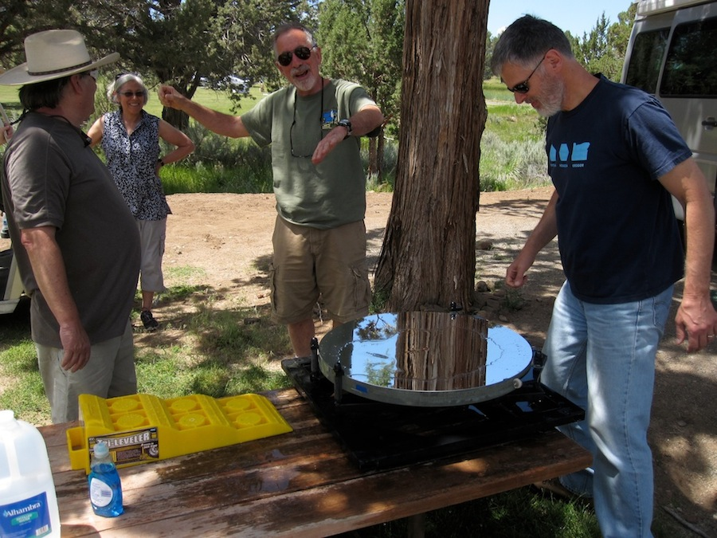
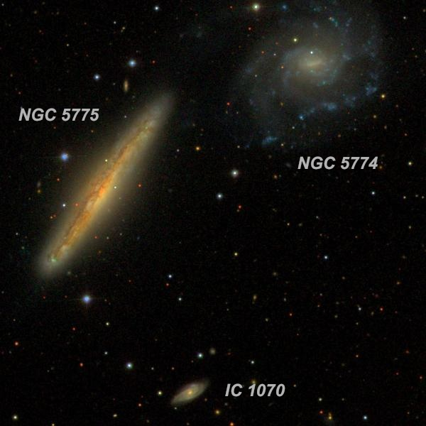
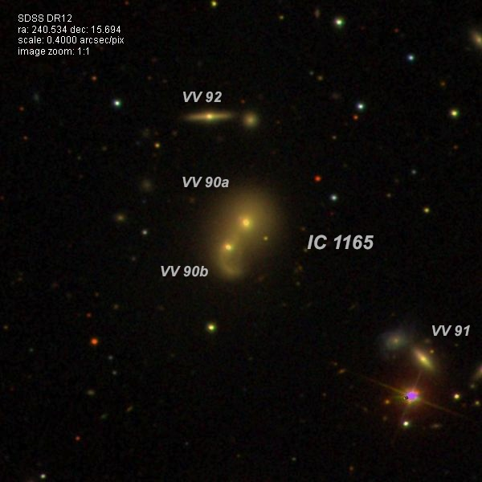
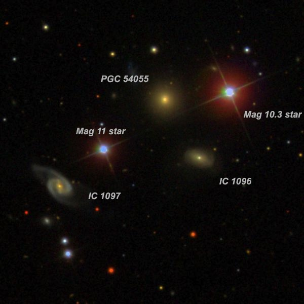
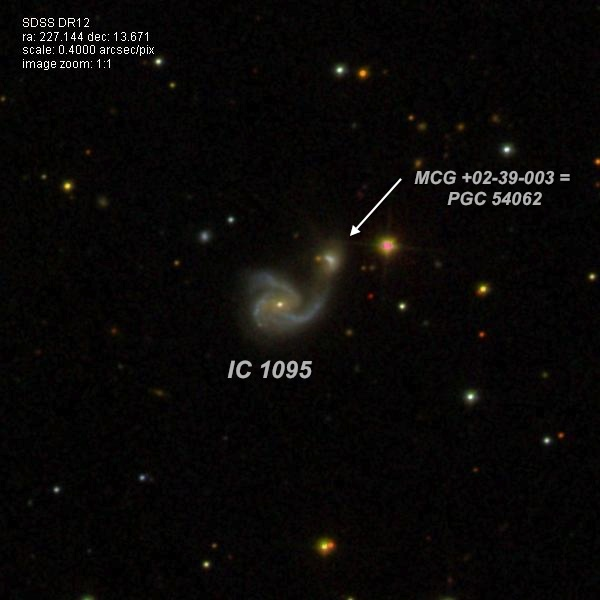
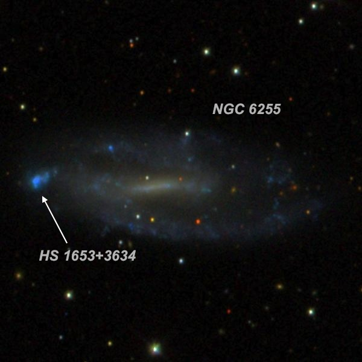
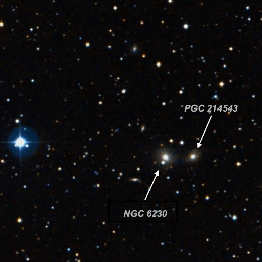
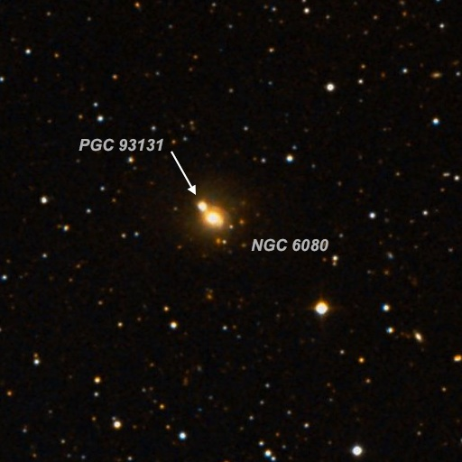

Observing in June on the Modoc Plateau (Part III)
While observing the first three nights at Likely Place, we noticed my 24-inch mirror was not performing quite up to par and a close look revealed it was so dirty (not cleaned in over 3 years) our own reflections were significantly dimmed in the haze covering the mirror. I had planned to clean the mirror the following month at GSSP but Tony Hallas came by, took a look, and proclaimed it the dirtiest mirror he had ever seen. Why wait a month? We drove over to the Likely General Store , purchased some cleaning supplies (dish soap, cotton balls, distilled water), pulled the mirror out and carried it over to a campsite table. Howard Banich volunteered to perform a thorough cleaning and did an excellent job. At the end, the mirror was sparkling again and performed excellently on the last night.

On the last night, I continued the pursuit of very close pairs or coalescing duos. IC 1165 below is a good example. Although it was discovered visually through the 30-inch refractor at the Nice Observatory in France, Stephane Javelle didn't notice it was double. In 1959 Russian astronomer Boris Vorontsov-Velyaminov catalogued it as VV 90 in his "Atlas and Catalogue of Interacting Galaxies". Although somewhat challenging, they were clearly split in my 24-inch at high power. Very close by are two additional pairs that Vorontsov-Velyaminov catalogued ( VV 91 and VV 92 ) but these were too faint to split.
Another interesting galaxy is NGC 6255 , which has a blue patch at its east end (see the SDSS image). What is this, a separate dwarf galaxy or a huge HII complex within NGC 6255? I found the knot actually has a higher surface brightness than the general glow of the galaxy. A 2007 study "A Search for Extended Ultraviolet Disk Galaxies in the Local Universe" states "The galaxy has been noted to have a possible companion which lies 75" to the east. It seems more likely from GALEX data that this object is just a particularly bright, blue cluster complex in the XUV-disk [Extended Ultra-Violet Disk] of NGC 6255".
After 4 nights of observing under the dark skies at Likely, I had logged notes on 93 galaxies and great memories with my wife Pat, Jimi and Connie Lowrey, Al Smith and Howard Banich. Next month, we met again at GSSP. But that's for another report...
--Steve Gottlieb

NGC 5774 and NGC 5775 (and IC 1070 ) 14 53 42.6 +03 34 58 V = 12.1 and 11.4; Size 3.0'x2.5' and 4.2'x1.0'; Surf Br 14.2 and 12.8'; PA = 145° and 146°
This unusual pair lies in Virgo with the nearby IC forming a nice challenge. With power of 375x, NGC 5774 appeared moderately to fairly bright, slightly elongated NW-SE, a full 2.0'x1.5', slightly brighter middle, gradually increasing towards the center. It contains a faint stellar nucleus or a faint star is superimposed near the center. A mag 14 star is just off the northeast side, 1.4' from the center. NGC 5775, 4.4' SE, is bright, fairly large, very elongated 4:1 NW-SE, 3.6'x0.9', slightly brighter elongated middle. This edge-on has a mottled, dusty appearance. A slightly brighter patch is at the southeast end. This patch is identified as HII region "C" in the 2001 paper "NGC 5775: Anatomy of a disk-halo interface" (2001A&A...377..759L). A mag 13.5 star lies 0.9' NE of center. Finally, IC 1070 is by far the smallest and faintest of the trio and was seen as faint to fairly faint (visible continuously), small, elongated 3:2 NW-SE, 18"x12".
The 3 galaxies were discovered by 3 different observers. William Herschel discovered NGC 5775 in May of 1786. His son John made 3 observations and called it "Not vF; gvlbM; a narrow ray, 90" l, 15" br." Both Herschel's missed nearby NGC 5774, which was discovered at Birr Castle in 1851 with Lord Rosse's 72-inch. But even IC 1070 was missed in the monster scope. It was discovered by French astronomer Stephane Javelle forty years later using the 30-inch refractor at the Nice Observatory.

IC 1165 = VV 90 16 02 08.2 +15 41 38 V = 13.7; Size 0.5'x0.5'
This interacting merging system was resolved at 375x. The brighter northwest component ( VV 90a ) of IC 1165 appeared faint, very small, round, 18" diameter. The southeast component ( VV 90b ) appeared extremely to very faint, very small, round, ~10" diameter. Both galaxies share a small common halo with the centers of this merged system separated by just 14 arcseconds!
Nearby to the southwest by 1.8' is VV 91. Using 375x and 500x, VV 91a appeared extremely to very faint, round, just 6" diameter. The fainter companion ( VV 91b ) off the northeast edge was not seen. VV 91 is situated just 21" NNW of a mag 12.9 star.

IC 1096 and IC 1097 15 08 31.3 +19 11 03 V = 15.0 and 14.6; Size 0.5'x0.3' and 1.1'x0.4'; PA 77° and 58°
This triplet only carries two IC designations, so you would assume that PGC 54055 , the brightest of the three would be one of the two ICs. In fact, modern catalogues (MCG, CGCG, PGC, HyperLeda) identify PGC 54055 as 1096. But the positions of French astronomer Stephane Javelle, who discovered IC 1096 and 1097 clearly apply to the other two galaxies labeled in the sketch. How did he miss PGC 54055?
IC 1096 appeared faint, small, round, 12" diameter. It was the faintest of the triplet with PGC 54044 1.1' NE and IC 1097 2.3' ESE. The two mag 10 and 11 stars in the SDSS image and the 3 galaxies fit within a 3' circle! PGC 54055 is the brightest of the trio and appeared fairly faint to moderately bright, round, 18" diameter, very small bright nucleus. It's flanked by a mag 11 star 1.3' SE and a mag 10.3 star 1' W. Finally, IC 1097 is faint, elongated 5:2 SW-NE, 30"x12" (largest of the trio), small slightly brighter core. A mag 11.2 star is 0.9' NW.

IC 1095 15 08 35.1 +13 40 14 V = 14.8; Size 0.6'x0.5'
IC 1095 is an interacting system with a very small companion attached at the northwest tip of a stretched spiral arm. In my 24-inch, IC 1094 appeared faint, small, slightly elongated, 20"x16", low even surface brightness. MCG +02-39-003 (the companion) is situated just 28" NW of center! The compact companion is extremely faint and small, round, only ~6" diameter. The companion is squeezed between IC 1095 and a mag 15.5 star just 23" W.

NGC 6255 16 54 47.1 +36 30 07 V = 12.7; Size 3.6'x1.5'; Surf Br = 14.4; PA = 85°
I used 375x on this fairly low surface brightness barred spiral. The bright blue knotty region on the left (east) end of the SDSS image was my main target. Is it an intensely active star forming complex in NGC 6255 or a separate dwarf companion? Sources disagree on its status.
I found NGC 6255 fairly faint, moderately large, very elongated 3:1 E-W, 1.5'x0.6', low but uneven surface brightness. At the east end of the galaxy is HS 1653+3634 -- a very small, nearly stellar knot, just off the east end of the main glow. The knot had a higher surface brightness than the main galaxy. Cool!
William Herschel discovered NGC 6255 on May 16 1787 (sweep 739) and recorded "extremely faint, considerably large, irregularly elongated nearly in the parallel [east-west]." Lord Rosse took a look in May 1850 using his gargantuan 72-inch speculum reflector and noted "Query is it a double streak with a nucleus or a * at f end." The "star" at the following end is nearly certainly the HII complex seen in my observation!

NGC 6230 16 50 46.8 +04 36 16 V = 14.5; Size 0.5' x 0.5'; Surf Br = 12.8
Using 375x, NGC 6230 appeared faint, small, round, 18" diameter. A mag 14.5 star is at the southeast edge. A wide pair of mag 14.1/14.9 stars is less than 1' NW. Mag 9 star HD 152087 is situated 5' east.
NGC 6230 forms a close pair with PGC 214543 1' W. The companion (identified in NED as NGC 6104 NED01) appeared very faint to faint, small, round, 15" diameter, low surface brightness but not difficult. The two components have a similar redshift with a light-travel time of ~430 million years so are physical companions, though there is no obvious evidence of interaction.

NGC 6080 16 12 58.6 +02 10 38 V = 12.9; Size 1.1'x0.8'; Surf Br = 12.6; PA = 90°
At 225x and 375x, NGC 6080 appeared fairly faint to moderately bright, small, slightly elongated, ~24"x18", very small bright nucleus. Forms a very close double system with PGC 93131 at the northeast edge of the halo, just 18" between centers! The physical companion (identified in NED as NGC 6080 NED02) appeared very faint to faint, extremely small, quasi-stellar (perhaps 6" diameter)
American comet hunter Lewis Swift discovered NGC 6080 in March 1887 using his 16-inch Clark refractor. Herbert Howe, observing with the 20-inch refractor in Denver in 1900, commented "this is accompanied by a star of mag 12.5, 20" distant at 45°, which appeared to be nebulous." The "star" is actually the compact companion PGC 93131 described in my observation!